Three complementary questions
A CPUE model needs more than a plausible-looking index. We need to ask whether it describes the observations adequately, what drives the standardised index, and how robust that index is to modelling choices. Residual checks address the first question; influence, CDI, and step plots primarily address the second. Comparing credible candidate models helps address the third. None is a substitute for the others.
For repeated simulations of known negative-binomial mixed and spatial models, see Residual validation. That study distinguishes conditioning effects, omitted structure, and finite-simulation behaviour; it does not change the defaults used here.
This article uses the same simulated lobster CPUE example as Influence diagnostics. It includes deliberately incomplete and poorly fitting candidates, not just the preferred example model. The aim is to connect a visible diagnostic pattern to a possible modelling response, without turning individual plots or p-values into automatic selection rules.
| influ2 helper | Question it helps answer | Important limitation |
|---|---|---|
influ_residuals() then
plot()
|
How do the overall response distribution, fitted-value patterns, and fishing-year residual distributions compare with model simulations? | Simulation conditioning differs between backends; the panels are exploratory, not a calibrated pass/fail test. |
plot_predicted_residuals() |
Does residual behaviour change with the predictive mean? | Reuses generalised residuals and matching predictive means; it is not a predictive interval plot. |
plot_grouped_residuals() |
Do groups show generalised residual departures through time? | Mean normal-score departures, not implied coefficients or a fitted interaction. |
implied_effects() then
plot_implied_residuals()
|
What local annual effect adjustment is suggested by each group? | Holds the original model fixed; initial Gaussian/log-response, Poisson, and NB2 support only. |
plot(checks, type = "qq") |
How do simulation-based quantile residuals compare with their normal reference? | Uses a precomputed influ_residuals object;
the ribbon is a nominal reference, not a calibrated model-specific
test. |
influ_residuals() takes a fitted model, not an
influ_diag summary: the latter deliberately does not retain
all observation-level predictions and residuals. The unified
plot() method then operates on the calculated
influ_residuals object. If you already have response
simulations, as_influ_residuals() provides a second route
to that same object; see Using simulations
generated elsewhere.
Fit competing lobster models
The data include uneven sampling across years and months, changing depth and soak time, and gaps in coverage. Catch was simulated from a negative-binomial distribution. We fit a reduced negative-binomial model that omits depth and soak time, a fuller negative-binomial model, and a Poisson model with the same full mean formula. All use exactly the same observations.
data(lobsters_per_pot)
lobster_reduced <- MASS::glm.nb(
lobsters ~ year + month,
data = lobsters_per_pot
)
lobster_nb <- MASS::glm.nb(
lobsters ~ year + month + poly(depth, 3) + poly(soak, 3),
data = lobsters_per_pot
)
lobster_poisson <- glm(
formula(lobster_nb), family = poisson(link = "log"),
data = lobsters_per_pot
)MASS is optional. The executed model examples are
skipped if it is not installed. Nothing in this article fits an MCMC
model.
A four-panel overview
Panels A-C already use simulation-based PIT residuals on the
standard-normal scale: the stored randomised PIT/rank values
are transformed with qnorm(pit). These are the same
residuals in the Q-Q, fitted-value, and year panels, not three different
residual definitions. This transformation provides a familiar reference
scale; it does not guarantee normally distributed residuals from an
estimated model.
Panel D is a different, complementary check of the response, not an ECDF of the PIT values. The response is whatever is modelled: for example, CPUE, catch, or encounter. The figure footer identifies both types of check explicitly.
The year panel uses box widths proportional to the square root of the number of observations in each year. This shows uneven sampling without crowding the year labels with counts; wider boxes represent larger samples.
Calculate the residual diagnostic once and reuse it. This does not update or refit the model. The four panels cover complementary questions, without making the user choose an arbitrary grouping variable:
- Distributional Q-Q: normal scores of randomised PIT/simulation ranks. Unlike a normal Q-Q plot of Pearson residuals, these account for the fitted response distribution, including discrete counts and zeros.
- Residuals against fitted values: check changes in centre, spread, and tails. The fitted quantity is the predictive mean estimated from the same simulations, so its conditioning matches the residual calculation.
- Residuals by fishing year: compare within-year distributions, not just mean residuals. A year factor can make those means look reassuring by construction. Boxes show medians, quartiles, whiskers, and outlying points; widths show relative sample sizes, and numeric year gaps remain visible.
- Response-adaptive check: Bernoulli encounter models use probability calibration; other models retain the observed-versus-simulated ECDF, including zero catches, with a pointwise predictive band. The examples immediately below are count models, so their fourth panel remains the CDF.
For this overview, use glmmTMB mixed models with a monthly random intercept, as in the main article. Year, depth, and soak time enter the mean formula as fixed effects; the monthly effect is partially pooled. The negative-binomial and Poisson candidates use the same mean structure and the original, unchanged simulated lobster dataset.
data(lobsters_per_pot)
lobster_nb_mixed <- glmmTMB::glmmTMB(
lobsters ~ year + poly(depth, 3) + poly(soak, 3) + (1 | month),
family = glmmTMB::nbinom2(link = "log"), data = lobsters_per_pot
)
lobster_poisson_mixed <- glmmTMB::glmmTMB(
formula(lobster_nb_mixed),
family = poisson(link = "log"), data = lobsters_per_pot
)These examples require the optional glmmTMB package. Its
native simulations resimulate monthly random effects from their
estimated distribution, rather than holding the twelve fitted monthly
effects fixed. Thus the ECDF band also reflects between-month variation
in replicated data. These are model checks, not a test of whether
particular observed months must follow a realised curve. The
generalised-residual helper and DHARMa examples below remain separate
fixed-effect comparisons.
nb_checks <- influ_residuals(lobster_nb_mixed, nsim = 250, batch_size = 25,
seed = 20260907)
nb_checks
#> Simulation-based residual diagnostics (glmmTMB)
#> 5049 observations; 250 simulations
#> Time: year [ year-name detection ]
#> Native simulations at fitted parameters; random effects resimulated
#> Exploratory ranks; not a calibrated goodness-of-fit test
plot(nb_checks, response_scale = "log1p")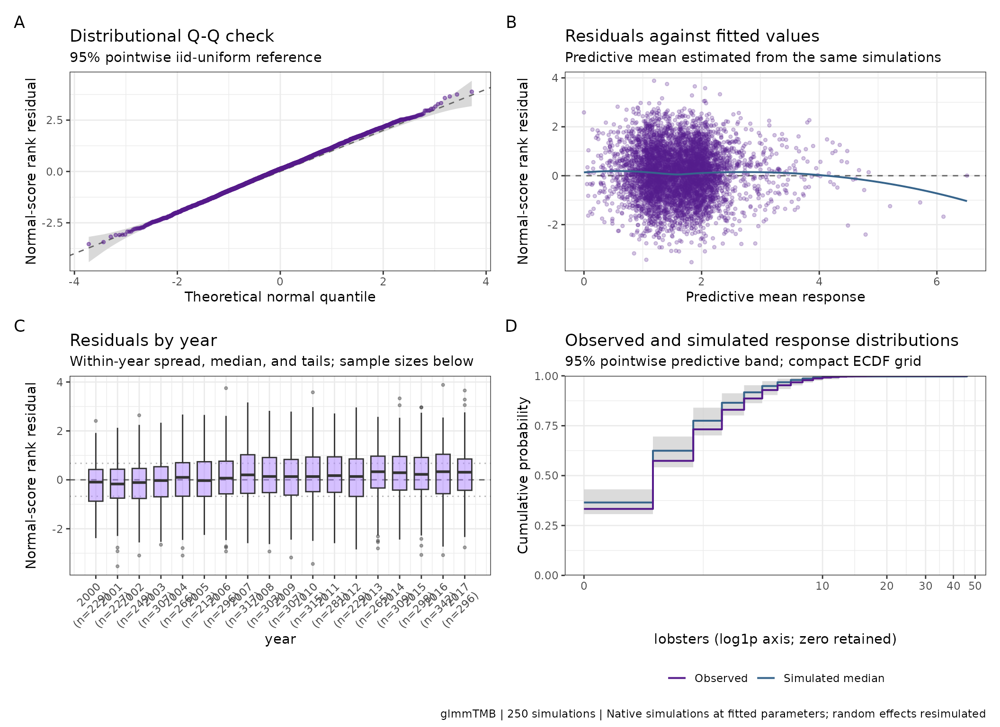
Four-panel simulation-based residual diagnostic for the negative-binomial glmmTMB lobster model with a monthly random intercept. The year panel reports the uneven sample sizes. The Q-Q ribbon is a nominal 95% pointwise independent-uniform reference, not a calibrated test for this mixed model. The ECDF ribbon is a 95% pointwise predictive band, including resimulated monthly effects. Its log1p response axis retains zero catches.
For comparison, apply exactly the same display to the Poisson glmmTMB candidate. Its mean formula includes the same terms, but it cannot reproduce the extra variation used to simulate the lobster data. Look for departures across the panels rather than declaring a model adequate from one favourable plot.
poisson_checks <- influ_residuals(lobster_poisson_mixed, nsim = 250,
batch_size = 25, seed = 20260907)
plot(poisson_checks, response_scale = "log1p")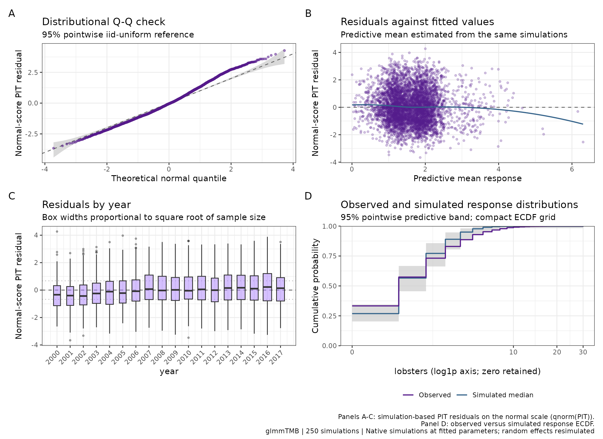
The same four-panel diagnostic for the Poisson glmmTMB lobster candidate, again with a monthly random intercept. Its observation distribution lacks the negative-binomial variation in the simulated data. Compare all four panels with the preceding model; resimulated monthly effects contribute to both displays, and the reference ribbons are not automatic model-selection thresholds.
A standalone Q-Q plot
Each panel can also be drawn separately. Reuse the
influ_residuals object calculated above to show exactly the
Q-Q panel from the four-panel overview, without refitting the model or
repeating its simulations:
plot(nb_checks, type = "qq")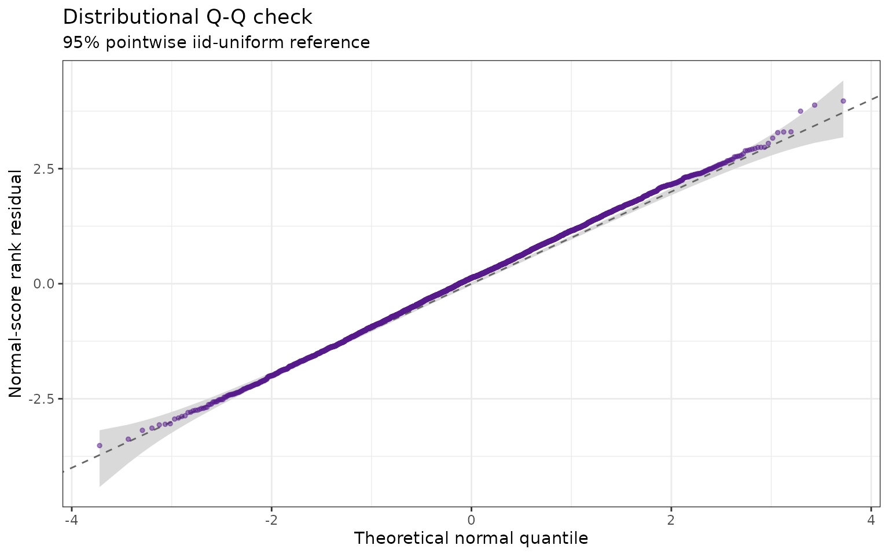
Standalone simulation-based Q-Q diagnostic for the negative-binomial glmmTMB lobster model. The points and ribbon are identical to the Q-Q panel in its four-panel overview. The grey ribbon is a nominal 95% pointwise independent-uniform reference, not posterior uncertainty around individual points or a calibrated goodness-of-fit threshold.
The result is a ggplot object, so it can be customised and saved in
the usual way. This method is documented in
?plot.influ_residuals; ?influ_residuals
explains the simulation calculation and includes the standalone plotting
call. It takes an influ_residuals result, not an
influ_diag influence summary.
The earlier influ2 plot_qq() function has been retired.
It compared native model residuals, usually Pearson residuals, with
normal quantiles. The unified simulation-based diagnostic supersedes
that workflow; it does not reproduce those native residuals. In
particular, count-model Pearson residuals need not be normal even under
a suitable model. The grey reference ribbon above is not a posterior
credible interval for each point; those intervals are not part of this
display. No compatibility wrapper for plot_qq() is
retained.
A standalone ECDF plot
An empirical cumulative distribution function (ECDF) reports the proportion of observations at or below each response value. At zero, it shows the empty-pot proportion; further along the curve, it describes the body and upper tail of the catch distribution. This is a response-distribution check, not an ECDF of residuals or a standardised CPUE index.
Reuse the same calculated lobster diagnostic to display its fourth panel:
plot(nb_checks, type = "distribution", response_scale = "log1p")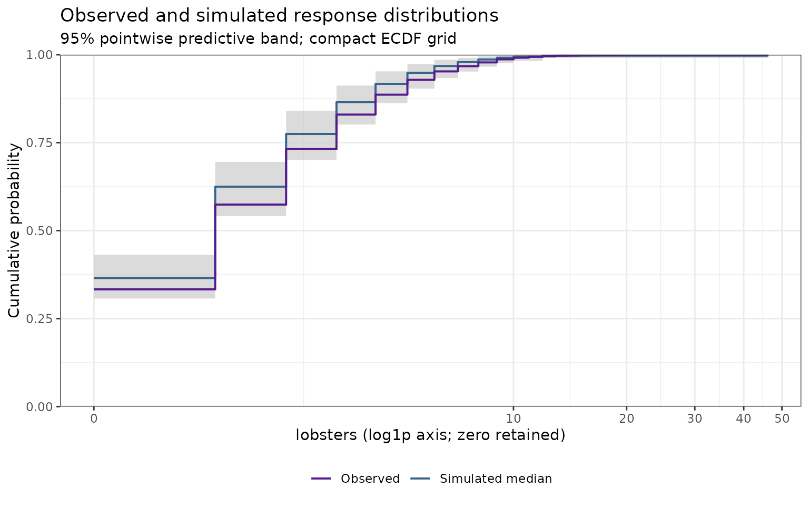
Standalone observed and simulated catch ECDFs for the negative-binomial glmmTMB lobster model. The purple line is the observed ECDF, the blue line is the pointwise median of 250 simulated ECDFs, and the grey ribbon is their 95% pointwise predictive band. These are exactly the distribution-panel results from the first overview, with monthly random effects resimulated. The log1p axis retains zero catches.
This call performs no new simulations. A curve above the predictive
band at a catch threshold means that more observed pots fall at or below
that threshold than the model commonly generates. Agreement in the
pooled ECDF does not establish that depth, year, or spatial patterns are
correct. The band is pointwise, not simultaneous, and crossing it is not
an automatic rejection test. The plotted simulated curves use a compact
grid rather than every simulated jump. For a Bernoulli model, an
explicit type = "distribution" still draws an ECDF,
although the default overview uses the more informative
probability-calibration panel.
Posterior predictive ECDFs with brms
For a complete brms fit, the same interface draws from the posterior predictive distribution: it includes response variation and posterior parameter uncertainty. It does not refit the model or run MCMC. For example, after fitting your model once:
bayesian_checks <- influ_residuals(full_brms, nsim = 500,
batch_size = 25, seed = 20260910)
plot(bayesian_checks, type = "distribution")The executed example below reuses the same complete,
previously fitted brms model as the six-backend
comparison: 150 simulated continuous responses over five years, with
y ~ year + x and a Gaussian observation distribution. This
small example demonstrates the Bayesian workflow; it is not a Gaussian
model for lobster counts. Negative responses are possible here, so the
response axis is untransformed.
The preparation script data-raw/brms-residual-example.R
was run on that complete fit. It calculates 500 posterior predictive
replicates in batches of 25 and saves only the compact diagnostic and
ECDF curves. The article renders those saved results, not a fabricated
compact brmsfit, and does not require Stan or MCMC to
rebuild the figures.
bayesian_example <- readRDS(system.file("extdata",
"brms-residual-example.rds", package = "influ2"))
bayesian_checks <- bayesian_example$checksThe original four-chain fit retained 4000 post-warmup draws, had maximum R-hat 1.0048, and no divergent transitions. These sampler checks do not establish observation-model adequacy.
plot(bayesian_checks, type = "distribution")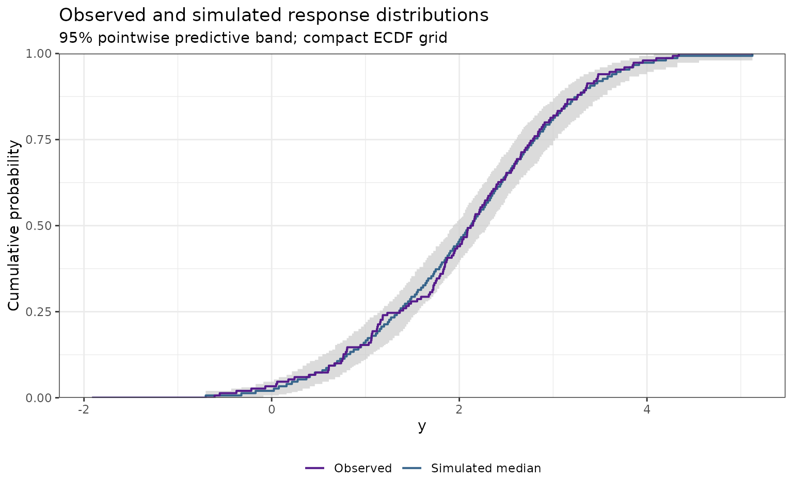
Posterior predictive response ECDF for the previously fitted Gaussian brms example. The grey ribbon and blue median summarise 500 joint posterior predictive replicates, including parameter uncertainty and observation noise. The purple line is the observed ECDF. This is a fitted-data predictive check, not LOO-PIT or a confidence interval for a CPUE index.
An overlay shows individual replicated ECDFs instead of a predictive ribbon. For a complete fit, the native brms alternative is:
The next figure uses 20 separately generated whole-response
replicates from brms::posterior_predict() on the same fit.
Each curve is evaluated on the stored grid. These are actual posterior
predictive replicates, not draws from a posterior-mean coefficient
vector. Saving their ECDF curves lets us render an overlay without
retaining an observation-by-draw matrix.
ggplot(bayesian_example$overlay, aes(response, probability)) +
geom_step(aes(group = replicate), colour = "grey65", alpha = 0.6) +
geom_step(data = bayesian_checks$observed_ecdf,
colour = "purple4", linewidth = 0.9) +
scale_y_continuous(limits = c(0, 1), expand = expansion(mult = 0)) +
labs(x = "y", y = "Cumulative probability")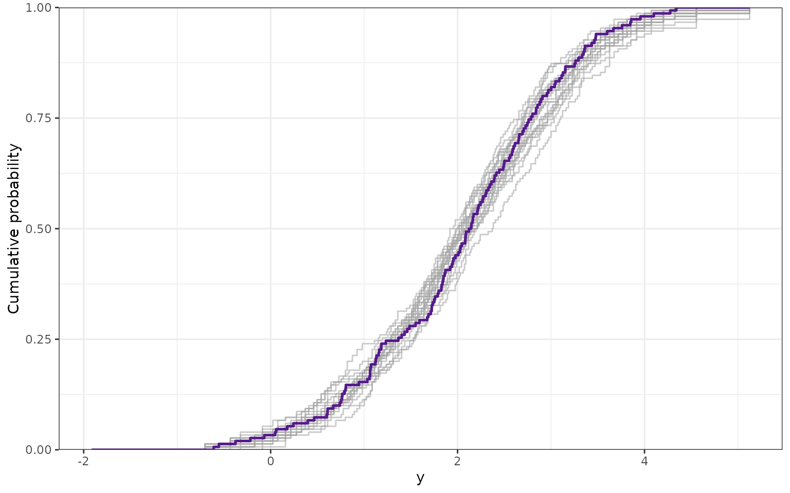
Twenty individual posterior predictive ECDFs (grey) and the observed ECDF (purple) for the same Gaussian brms model. Each grey step curve comes from one whole posterior predictive replicate, evaluated on the compact grid. This smaller, separately generated set illustrates replicate-to-replicate variation; it is not the 500-replicate ribbon shown above.
See the native posterior
prediction and ECDF
overlay documentation. Use a limited number of overlay draws for
readability and memory; the influ2 ribbon can summarise more replicates
in batches. An influ_residuals summary cannot regenerate
discarded replicates or run a new native pp_check(); keep
the original fit separately for that purpose.
These checks are not LOO-PIT
The response ECDF above compares whole observed and replicated datasets. The normal-score rank residuals in the Q-Q panel instead locate each observation within its own fitted predictive distribution. Both use the data that fitted the model. Posterior predictive ranks need not be uniformly distributed even when the model is appropriate.
LOO-PIT uses a predictive distribution that leaves the observation
out. It is a distinct predictive-calibration diagnostic, not a
model-comparison score and not supplied merely by calculating
LOOIC in table_criterion(). Native LOO-PIT workflows need
aligned predictive draws and leave-one-out calculations, including
checks on any importance-sampling approximation. For dependent fisheries
observations, the held-out unit must also match the intended prediction
question. See the loo
model-checking example. influ2 does not implement universal LOO-PIT
or automatic cross-validation refits. Those remain outside this
release’s residual interface.
Automatic time selection
year, yr, fy,
fishing_year, Fishing.Year, and similar
recognised year names in the model formula are detected without regard
to case or punctuation. If there is no year-named term, the calculator
looks for native time metadata, then time or
season, then the first single-variable model term. That
final fallback warns rather than silently calling a covariate “year”.
Multiple candidates require an explicit choice. The printed result
records the selected column and how it was found.
checks <- influ_residuals(fit, data = original_data, year = "fishing_year")
plot(checks, type = "year")Supply the original data if a transformed term, such as
factor(year), hides the raw column and it cannot be
recovered from the model call. Original row names are checked, including
after subsetting or missing-value omissions. For a region-specific or
covariate-specific question, use a separate targeted plot; the standard
four-panel layout remains consistent across models.
Interpretation and memory
With B simulations, L simulated responses
below an observation, and E ties, the rank is
(L + U * (E + 1)) / (B + 1), where U is
uniform. This finite-simulation construction randomises ties, including
zero atoms, without jittering catches in response units. It approaches a
PIT residual as the number of simulations increases. The normal score is
a display transformation, not an assumption that the catches themselves
are normally distributed. Try additional seeds and more simulations
before drawing strong conclusions about tails. The seed and batch size
are recorded; repeat both for identical results because native
simulation methods can consume random numbers differently.
The Q-Q ribbon is an independent-uniform reference. Fitting parameters, spatial dependence, and Bayesian data reuse mean it is not automatically a correctly calibrated goodness-of-fit envelope. There are deliberately no automatic p-values or red/green judgements. The ECDF band describes replicated data under the selected simulation scheme, not uncertainty in the abundance index, and is not a simultaneous band.
For delta, hurdle, and zero-inflated models, the default overview checks the combined response, including zeros. It is not a diagnostic of the positive component alone. A positive-component check requires that component’s fitted model and matching positive observations, or an explicitly component-aware native diagnostic. Subsetting or relabelling a combined-response overview does not turn it into a positive-component check.
| Backend | Default simulation target in
influ_residuals()
|
|---|---|
| GLM / GAM | Observation error at fitted parameters, including fitted smooths; parameter uncertainty is not added. |
| glmmTMB | Native simulation with random effects resimulated from their estimated distribution. |
| sdmTMB / tinyVAST |
mle-eb: observation error conditional on
fitted spatial, spatiotemporal, and other latent effects. |
| brms | Existing joint posterior draws followed by response simulation, including existing group effects. This requires a complete fit, not a compact influence fixture. |
The native documentation describes the respective glmmTMB, sdmTMB, tinyVAST, and brms simulation interfaces. The table above states the choices made by this wrapper, not a claim that every backend has the same native defaults.
Choosing the conditioning
conditioning = "backend_default" preserves the table
above. The same plotting interface does not make different predictive
targets interchangeable. Choose an explicit target when comparing
models, and check the recorded scheme:
| Model | Supported conditioning values, besides
"backend_default"
|
|---|---|
| GLM / GAM | "fitted" |
| glmmTMB |
"new_effects", "fitted"
|
| sdmTMB |
"fitted", "conditional_draw",
"new_effects"
|
| tinyVAST |
"fitted",
"conditional_draw"
|
| brms | "posterior_predictive" |
For example, keep the fitted monthly effects while generating new observations from the already fitted lobster model:
lobster_conditional <- influ_residuals(
lobster_nb_mixed, nsim = 250, seed = 42, conditioning = "fitted"
)
lobster_conditional$metadata$scheme
#> [1] "Observation simulations conditional on fitted random effects and parameters""fitted" fixes estimated parameters, smooths, and random
effects. It asks about response variation conditional on that estimated
structure. In contrast, "new_effects" regenerates random
effects at fitted distribution parameters. For sdmTMB it follows native
re_form = NA: fitted smooths remain fixed.
"conditional_draw" holds fixed parameters at their
estimates and takes one joint approximate conditional draw of
the latent effects. That vector is shared across all response
simulations, preserving its spatial and temporal dependence. It is not a
fresh field per simulation, full Bayesian parameter uncertainty, or
MCMC. See the executed comparisons in Spatial and
spatiotemporal diagnostics.
New spatial schemes and glmmTMB "fitted" prepare an
independent native objective and per-replicate seeds. Changing
batch_size therefore changes neither their latent draw nor
their observation-level results. The compact response-ECDF grid still
uses the first batch and can differ. Neither the objective, latent
vector, nor full response matrix is retained in the result. Backend
setup and sparse factorisation can still use substantial memory. The
existing default routes keep their previous random-number behaviour.
Unsupported combinations fail explicitly. In particular, this interface does not silently turn brms posterior predictive checks into fixed-parameter checks, sample GAM coefficient uncertainty, or regenerate tinyVAST processes. The external-simulation constructor can describe additional explicitly generated schemes. A shared name does not guarantee equally calibrated diagnostics: estimated parameters, approximate latent distributions, and fitted-data reuse still affect the reference distribution. Do not select a seed because its residuals look best, or treat a conditional check as full validation of the spatial covariance structure.
The shared conditional-draw option requires a converged ML fit with a positive-definite Hessian, not a REML or profiled fit. Some native REML latent vectors also contain fixed coefficients; sampling them would contradict the promise to hold those coefficients fixed, so that case is rejected explicitly.
These targets differ. In particular, conditional checks can conceal
latent structure absorbed by an overly flexible model, and posterior
predictive ranks need not be uniform. For the alternative sdmTMB
approximate-latent-draw recipe, spatial correlation checks, or
specialised OSA/LOO-PIT diagnostics, see the later sections. Delta and
zero-inflated models default to the combined response;
explicit supported component checks are described below. Multivariate,
censored, quasi, non-binomial weighted, and multi-trial sdmTMB inputs
are not supported by this initial display. A native simulation failure
is reported rather than replaced with a different response distribution.
Binomial GLM/glmmTMB panels use success counts, with integer trials
preserved. Weighted one-column binomial responses now require
trial_counts = "trials_column" and the original
data, or a two-column success/failure response. Arbitrary
fitting weights are not assumed to be trial counts.
Calculation retains one residual and predictive mean per observation,
plus compact ECDF summaries. It does not retain the
model or the full observation-by-simulation matrix. Working memory is
approximately observation count times batch size, plus ECDF grid size
times simulation count, with additional allocations inside native
backends. Each replicate remains a whole joint response vector; batching
does not discard its spatial or posterior dependence. The ECDF uses a
grid spanning the observations and first simulation batch, rather than
storing every simulated step. Replotting nb_checks is
immediate and performs no new simulations.
The generalised-residual helpers
plot_predicted_residuals() and
plot_grouped_residuals() remain available for their
separate questions. Q-Q plots use the unified simulation-based workflow
shown above.
Encounter calibration
For a Bernoulli encounter model, the pooled binary CDF mainly checks the overall proportion of positive catches. A fitted intercept can enforce that agreement, and year effects can similarly reproduce annual proportions. Neither result establishes that probabilities are correct for particular fishing operations. The default fourth panel therefore changes to calibration: among observations assigned about 80% probability of positive catch, did about 80% actually contain positive catch?
The first three panels and their residuals are unchanged. Automatic selection uses the response family, component, and known trial counts, not whether the sample happens to contain zeros and ones. A Poisson sample containing only zeros and ones remains a count diagnostic. An all-zero Bernoulli sample remains an encounter diagnostic, although its fitted model may have convergence issues. Gamma/lognormal positive responses and combined delta catch retain their CDFs.
The following completely simulated teaching example has variable encounter probabilities driven by depth and target fishery. Nothing here uses BNS data or refits an existing fisheries model. A small GAM demonstrates the workflow.
set.seed(813)
encounter_data <- data.frame(
year = factor(rep(2010:2013, each = 300)),
target = factor(rep(c("A", "B"), 600)),
depth = runif(1200, 20, 100)
)
encounter_data$true_probability <- plogis(
-1.6 + 2.4 * (encounter_data$target == "B") +
1.2 * sin((encounter_data$depth - 20) / 80 * pi)
)
encounter_data$present <- rbinom(
nrow(encounter_data), 1, encounter_data$true_probability
)
encounter_gam <- mgcv::gam(
present ~ year + target + s(depth, k = 5),
family = binomial(), data = encounter_data, method = "REML"
)
encounter_checks <- influ_residuals(
encounter_gam, nsim = 250, seed = 813,
calibration_bins = 10, calibration_min_n = 30
)
plot(encounter_checks)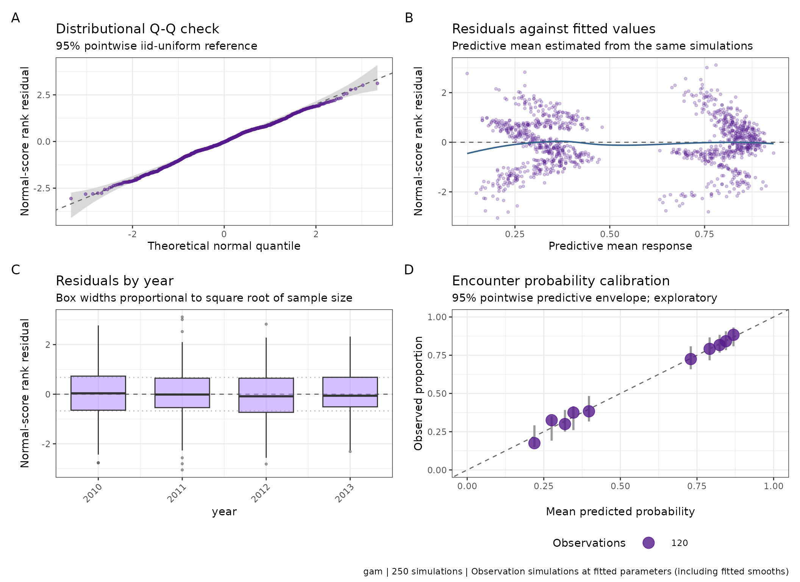
Response-adaptive four-panel overview for the simulated encounter GAM. The fourth panel compares observed encounter proportions (purple points) with original fitted probabilities in fixed bins; grey ranges are pointwise 95% predictive envelopes from observation simulations at fitted parameters, including fitted smooths. They are not confidence intervals for a calibration curve or a calibrated goodness-of-fit test.
Fixed bins and predictive envelopes
Bins contain roughly equal numbers of observations, with a requested
default of ten bins and a default minimum of 20 observations. Identical
and effectively identical probabilities (absolute tolerance
1e-8) are never divided between bins. The number of bins is
reduced and small bins are merged when necessary. Points sit at the mean
fitted probability in each bin, point area represents observation count,
and the dashed line is the 1:1 reference. An effectively constant
probability gives one point, labelled as an overall-frequency check
only. Sparse support is disclosed; black crosses flag sparse points.
Bin membership comes from original fitted probabilities, not the noisy average of simulated binary outcomes. It stays fixed across all joint response simulations. Within each batch, influ2 reduces each complete simulation to bin proportions before discarding it. Only summary tables remain in the result; no observation-by-simulation matrix is saved for calibration. Configure bins when calculating, rather than when plotting, because discarded simulations cannot subsequently be re-binned.
Grey ranges predict variation in the observed
proportions under the recorded simulation scheme. They are not
uncertainty intervals for an unknown calibration curve. They are
pointwise, not simultaneous, and do not turn this exploratory
fitted-data display into a test. GLM/GAM simulations hold fitted
parameters and smooths fixed. glmmTMB bins use probabilities conditional
on fitted random effects, whereas its native simulations redraw those
effects; the simulated envelope can consequently be displaced from the
identity line. By default, sdmTMB/tinyVAST use their existing
mle-eb conditioning. With
conditioning = "conditional_draw", their bins instead use
expected probabilities at the same sampled latent
vector, not noisy binary-simulation averages. With
"new_effects", fitted conditional bins remain distinct from
the process-varying simulation envelope. brms bins use posterior mean
expected probabilities over the same draw identities as the posterior
predictive simulations, including existing group effects.
In particular, the grey bars are not error bars attached to the purple points. Each purple point is the actual observed proportion; each bar is the range of proportions predicted by the model’s simulations for that bin. A point outside its bar is therefore possible and informative. For the fixed- parameter GAM and offset-only examples below, those ranges generally lie near the diagonal identity line, rather than around the observed points. They may be asymmetric and vary in width between bins. In the grouped difference plot, the same simulated ranges are expressed relative to the predicted proportion, so their reference is zero instead of the diagonal. We keep separate bars: the stored summaries do not define a continuous uncertainty region between bins.
Whole simulations preserve the dependence represented by those methods. They do not add unmodelled vessel or temporal dependence. If such dependence matters, interpret the envelope cautiously and use scientifically appropriate grouped checks; held-out or blocked validation would provide stronger evidence. Nothing in these plotting calls automatically refits a model or cross-validates it.
Deliberately distorted probabilities
For contrast, force an exaggerated probability pattern using an offset-only binomial model. This intentionally wrong model specifies its probabilities without estimating an intercept. It is a demonstration of visible miscalibration, not a recommended candidate fitting procedure.
encounter_data$distorted_logit <-
2 * predict(encounter_gam, type = "link") + 0.8
distorted_model <- glm(
present ~ 0 + offset(distorted_logit),
family = binomial(), data = encounter_data
)
distorted_checks <- influ_residuals(
distorted_model, data = encounter_data, year = "year",
nsim = 250, seed = 813, calibration_min_n = 30
)
patchwork::wrap_plots(
plot(encounter_checks, type = "calibration") + labs(title = "Encounter GAM"),
plot(distorted_checks, type = "calibration") + labs(title = "Distorted probabilities"),
ncol = 2
)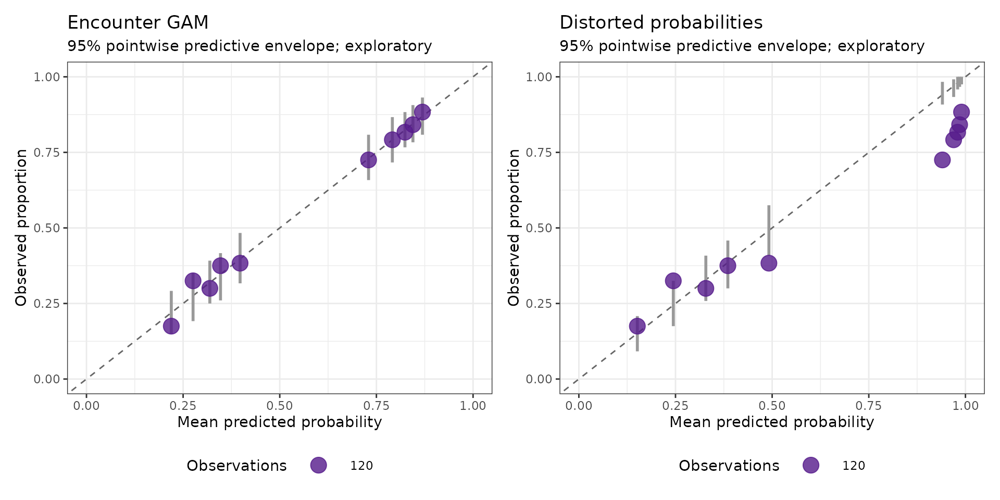
Encounter calibration for the simulated-data GAM (left) and deliberately exaggerated probabilities (right). Purple points are observed bin proportions, the dashed line is identity, and grey bars are pointwise 95% ranges of simulated bin proportions under each model’s fixed probabilities. The bars are model predictions, not error bars around the purple points: a point outside its bar indicates a discrepancy for that bin. They are not a continuous band between bins or a calibrated pass/fail test. The distorted probabilities show systematic departures, rather than merely a different overall encounter rate.
A pooled pass can conceal missing structure
An intercept-only model estimates one overall encounter probability.
Its single pooled point lies on the identity line even when target
fishery is an important omitted predictor. The example below shows that
limitation and checks the mean raw encounter residual,
observed presence - fitted probability, within each
year-by-target combination. Groups come from the scientific question,
not from the observed outcome.
pooled_model <- glm(present ~ 1, family = binomial(), data = encounter_data)
pooled_checks <- influ_residuals(
pooled_model, data = encounter_data, year = "year",
nsim = 250, seed = 813,
calibration_groups = c("year", "target")
)
patchwork::wrap_plots(
plot(pooled_checks, type = "calibration"),
plot(pooled_checks, type = "calibration_groups"),
ncol = 2
)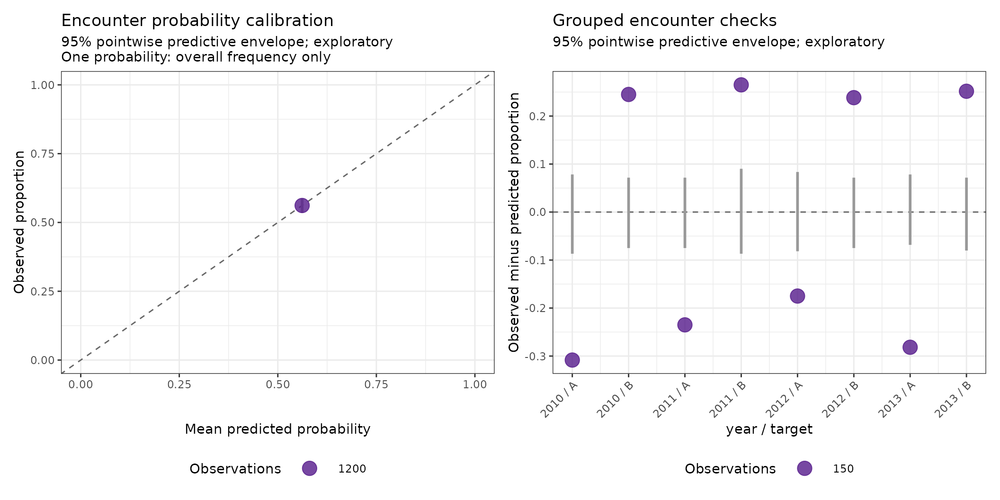
The intercept-only model matches the overall encounter frequency exactly (left), yet year-by-target mean raw residuals expose omitted target structure (right). Purple points on the right are observed minus fitted encounter proportions; grey bars are pointwise 95% ranges of simulated-minus-fitted proportions, conditional on the fixed fitted probabilities. These are model-predicted ranges around the zero reference, not error bars around the observed purple points, which may lie outside them. A pooled calibration pass is not an all-clear for model structure.
Use calibration_groups = c("year", "area"),
"vessel", or a supported season grouping to answer other
scientific questions. Supply original data when grouping
columns were not in the model formula. Groups below
calibration_min_n remain visible and flagged, without a
predictive envelope; they should not be treated as precise estimates.
The compact tables are available as checks$calibration$bins
and checks$calibration$groups$table. Do not define groups
using catch presence, catch magnitude, or a derived outcome.
Components, grouped trials, and older objects
component = "auto" is deliberately conservative for
joint models: it keeps the combined catch response and the CDF. For a
supported joint hurdle/delta model, component = "encounter"
compares presence with its fitted encounter probability. It transforms
complete native catch simulations to presence, so their
within-simulation dependence is retained. This is not the same as using
a zero-inflation probability as an encounter probability in a count
mixture. Automatic encounter extraction from zero-inflated count
mixtures is rejected.
sdmTMB also provides native positive-component simulation. The following calls reuse an existing fitted model; they do not fit one here:
combined_checks <- influ_residuals(delta_fit, component = "combined")
encounter_checks <- influ_residuals(delta_fit, component = "encounter")
positive_checks <- influ_residuals(delta_fit, component = "positive")The positive check uses native component-2 simulations at rows with observed positive catch. It never filters each simulated combined catch vector to its positive outcomes. Native component prediction/simulation is documented by sdmTMB. Joint positive extraction for other backends is not implemented: use the separately fitted positive component with its matching data. Standard-link tinyVAST delta encounter extraction is supported; other tinyVAST delta parameterisations require a separate encounter fit.
Known multi-trial binomial responses retain the CDF in the default
overview. Explicit type = "calibration" is supported:
observed proportions are total successes divided by total trials, and
fitted probabilities are averaged with trial-count weights. Point size
still represents the number of observation rows, not a claim that all
trials are independent. Native beta-binomial dependence, where
supported, is retained in the simulation envelopes. The original
multi-trial sdmTMB limitation remains explicit.
plot(checks, type = "overview", response_diagnostic = "auto")
plot(checks, type = "calibration")
plot(checks, type = "distribution")
autoplot(checks, response_diagnostic = "auto")An explicit distribution request retains the previous CDF, including
for binary data. Existing callers that manually assemble panels and
request type = "distribution" therefore remain unchanged;
opt into the automatic fourth panel by using the overview.
response_scale = "log1p" applies only to a CDF, never to
calibration axes. Old saved objects without response-type metadata
retain the distribution overview with a warning. Without fitted
probabilities, recalculation is required for calibration; missing
simulation envelopes are not replaced by fabricated or unrequested
binomial intervals.
Generalised residuals against fitted values and predictors
All maintained influ2 residual plots use the same simulation-based normal-score rank residuals. These incorporate the fitted response distribution, including its discrete outcomes and supported hurdle/delta structure. They are not native Pearson or deviance residuals. Positive scores identify observations high in their predictive distributions; negative scores identify low observations.
Calculate once, then reuse the stored object for different views. The fitted axis is the predictive mean from the same simulations, with the same response component and random-effect conditioning.
reduced_checks <- influ_residuals(lobster_reduced, data = lobsters_per_pot,
groups = "month", nsim = 250, seed = 41)
full_checks <- influ_residuals(lobster_nb, data = lobsters_per_pot,
groups = "month", nsim = 250, seed = 41)
patchwork::wrap_plots(
plot_predicted_residuals(reduced_checks) + labs(title = "Reduced NB"),
plot_predicted_residuals(full_checks) + labs(title = "Full NB"),
ncol = 2
)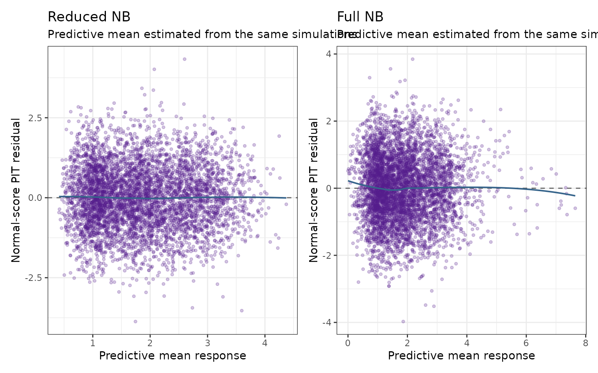
Generalised residuals against predictive mean lobster catch for reduced and full negative-binomial models. Blue smooths describe changes in the residual centre; the dashed line marks zero.
A fitted-value plot can conceal an omitted covariate. The same residuals can be matched back to depth and soak time using their original row identifiers. Neither this matching nor redrawing the figures repeats simulation.
residual_data <- do.call(rbind, lapply(
c("Reduced NB", "Full NB"), function(label) {
checks <- if (label == "Reduced NB") reduced_checks else full_checks
rows <- match(checks$observations$row, rownames(lobsters_per_pot))
r <- checks$observations$residual
rbind(
data.frame(model = label, predictor = "Depth (m)",
value = lobsters_per_pot$depth[rows], residual = r),
data.frame(model = label, predictor = "Soak time (hours)",
value = lobsters_per_pot$soak[rows], residual = r)
)
}
))
residual_data$model <- factor(residual_data$model,
levels = c("Reduced NB", "Full NB"))
ggplot(residual_data, aes(value, residual)) +
geom_hline(yintercept = 0, linetype = 3, colour = "grey45") +
geom_point(alpha = 0.08, size = 0.5) +
geom_smooth(method = "loess", formula = y ~ x, se = FALSE) +
facet_grid(model ~ predictor, scales = "free_x") +
labs(x = NULL, y = "Normal-score rank residual")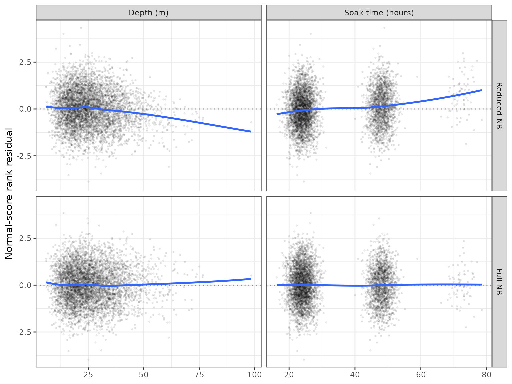
The same generalised residuals against depth and soak time. The reduced model omits both predictors; the full model includes their polynomial effects. Smooth trends are descriptive, not tests.
For real fisheries, inspect vessel, gear, year, season, and location. Sparse regions and changing fleet composition deserve attention. These are in-sample diagnostics, not independent validation observations.
Grouped PIT departures and residual-implied effects
New Zealand inshore CPUE reports use residual-implied coefficients to explore departures from a shared year effect. Figure O.9 of Starr and Kendrick (2019) adds a stratum’s mean standardised residual to a normalised year coefficient. Figures C.19-C.20 of Middleton (2025) show related target-by-year and area-by-year displays for lognormal positive catches, omitting strata with fewer than 10 records. These examples motivate the grouping and support checks; their captions do not establish a universal Pearson-residual definition.
There are now two deliberately distinct functions.
plot_grouped_residuals() displays mean generalised
residual departures around zero. A positive point means that a
group’s responses tend to be high within their own predictive
distributions; it is not a log-CPUE adjustment or biomass
multiplier.
implied_effects() and
plot_implied_residuals() restore the effect-scale
question: how would a group’s annual trajectory depart from the
fitted baseline if a small local adjustment were allowed? The new
default estimates that adjustment using the fitted response likelihood.
The separate Residual-implied effects
article demonstrates agreement with ordinary log-residual
arithmetic, compares the actual historical standardised-residual GLM
convention, and shows a negative-binomial mixed model. PIT scores are
not added to coefficients. Neither display fits a full interaction.
plot_grouped_residuals(full_checks, groups = "month", min_n = 10)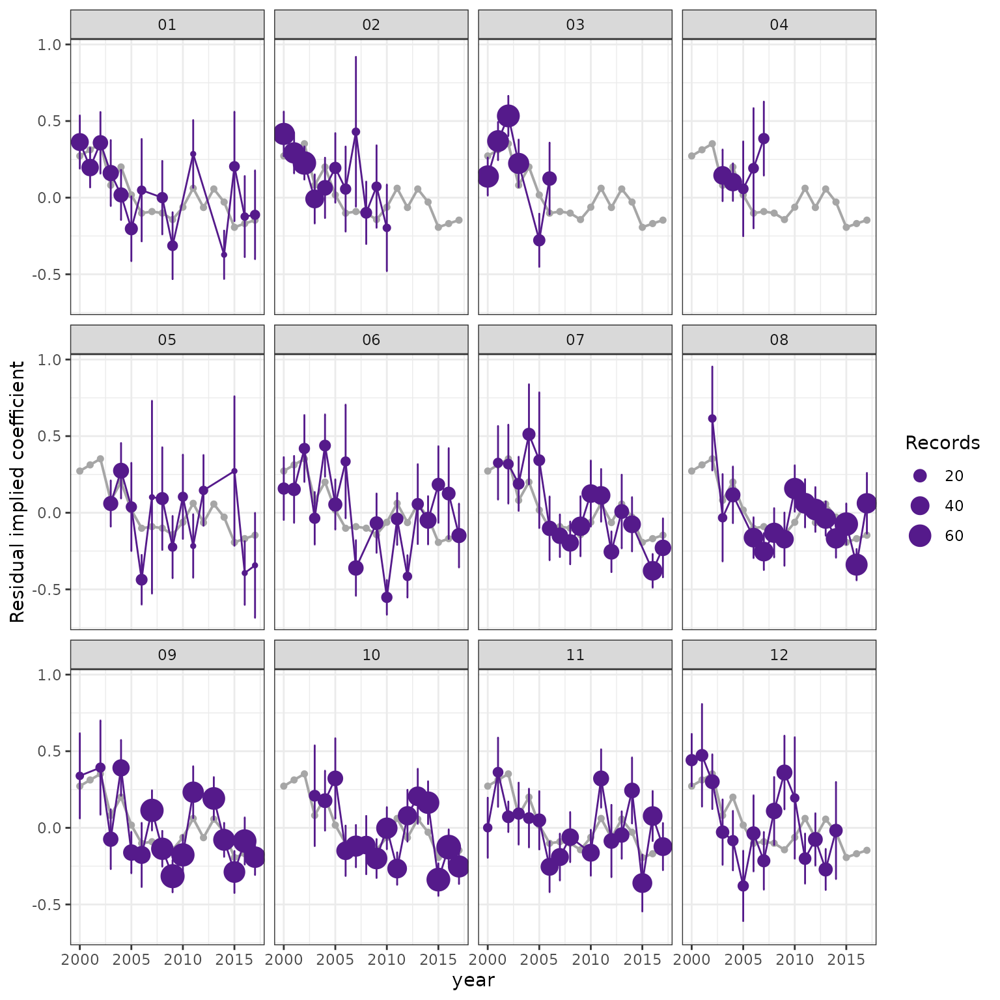
Generalised year-by-month residual departures for the full negative-binomial lobster model. The grey zero line is the common normal-score reference, not the annual coefficient. Bars show mean plus or minus a descriptive iid standard error (SD/sqrt(n)), and point area represents record count. Strata with fewer than 10 records are omitted; all panels share the same scale.
The bars do not account for within-vessel or spatial dependence, parameter estimation, or Monte Carlo variation. They are not confidence intervals for an interaction. Repeat with more simulations or different seeds when a feature matters, and inspect the full residual distribution as well as its mean. A zero mean alone cannot rule out wrong dispersion or tails. Posterior predictive ranks reuse the fitted data and are not guaranteed uniform; conditioning for hierarchical models remains important.
Actual year effects remain available from influ() and
the index functions. The new implied-effect calculation is a conditional
diagnostic, not an adopted group-specific index. Estimating such an
index still requires the appropriate model structure and
standardisation, followed by model checking.
For a different grouping, retain it during calculation:
checks <- influ_residuals(fit, data = original_data,
groups = c("area", "gear"), nsim = 1000, seed = 41)
plot_grouped_residuals(checks, groups = "area")
plot_grouped_residuals(checks, groups = "gear")
plot_predicted_residuals(checks)Keep original row names. influ2 verifies fitted data before retaining the group columns, including after omissions, subsets, or reordering. It does not attach arbitrary new data to an already calculated object. Choose groups independently of the outcome: selecting high catches as a group invalidates the zero reference.
For delta models, component = "combined" checks the
combined response. It does not diagnose positive
catches separately. Supported explicit
component = "positive" calculations use the native positive
component and its positive observation rows. The plotting helpers
preserve that selection. Unsupported component extraction fails instead
of substituting a different residual type. Existing code requesting
type = "pearson" now receives a migration error; remove
that argument and recalculate. Old saved figures do not change when the
package is updated.
Simulation-based checks with DHARMa
DHARMa supplies simulation-based quantile residuals and associated diagnostics (Hartig 2026). It is a suggested, optional dependency, not part of the compact influence calculation. The following example contrasts Poisson and negative-binomial variation while holding the mean formula fixed.
dharma_poisson <- DHARMa::simulateResiduals(
fittedModel = lobster_poisson, n = 250, refit = FALSE, seed = 20260907
)
dharma_nb <- DHARMa::simulateResiduals(
fittedModel = lobster_nb, n = 250, refit = FALSE, seed = 20260907
)Each object is calculated once and reused. With
refit = FALSE, simulated responses are generated from the
fitted parameters; the model is not refitted 250 times. This quick
example uses 250 simulations. For substantive work, increase that number
and check stability. Simulation storage still scales with observations
times simulations, independently of influ2’s compact
uncertainty-retention settings.
par(mfrow = c(1, 2))
DHARMa::plotQQunif(
dharma_poisson, testUniformity = FALSE, testOutliers = FALSE,
testDispersion = FALSE, main = "Poisson"
)
DHARMa::plotQQunif(
dharma_nb, testUniformity = FALSE, testOutliers = FALSE,
testDispersion = FALSE, main = "Negative binomial"
)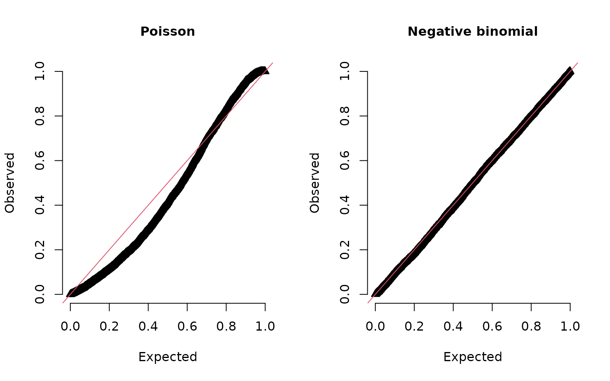
DHARMa uniform Q-Q checks for Poisson and negative-binomial lobster models with identical mean formulas. The Poisson model does not accommodate the simulated overdispersion. Formal tests are suppressed here so interpretation starts with the diagnostic pattern.
DHARMa residuals are approximately uniform on zero to one under an adequate simulation model, not normally distributed. Do not feed them into a normal Q-Q plot without a deliberate transformation. Distributional agreement does not rule out remaining covariate patterns:
par(mfrow = c(1, 2))
DHARMa::plotResiduals(
dharma_poisson, form = lobsters_per_pot$depth, quantreg = FALSE,
main = "Poisson: depth"
)
DHARMa::plotResiduals(
dharma_nb, form = lobsters_per_pot$depth, quantreg = FALSE,
main = "Negative binomial: depth"
)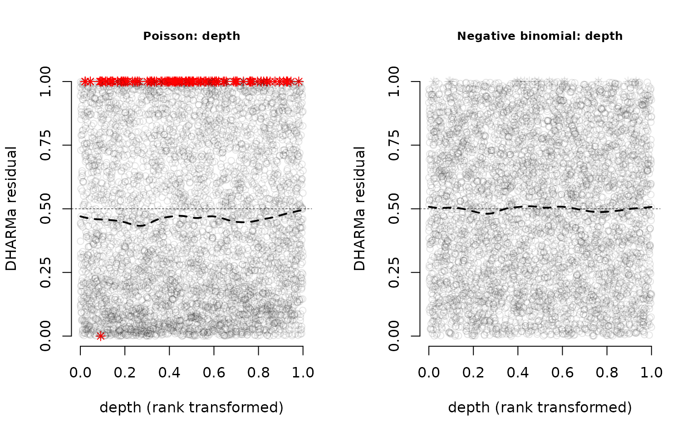
Simulation-based quantile residuals against depth for the two full-mean lobster models. The thin black dashed line marks the uniform median of 0.5; the thicker dashed curve is a descriptive smooth. Depth is rank-scaled. These are not independent validation tests.
The simulated responses can also check quantities of direct fisheries interest. Compare the observed proportion of empty pots and the upper catch quantile with the same quantities calculated from each simulated dataset. These are predictive checks at fitted parameters, not posterior predictive checks or confidence intervals for an index.
statistics <- list(
"Empty-pot proportion" = function(x) mean(x == 0),
"95th catch percentile" = function(x) unname(quantile(x, 0.95))
)
simulations <- list(Poisson = dharma_poisson, NB = dharma_nb)
predictive_checks <- do.call(rbind, lapply(names(simulations), function(model) {
do.call(rbind, lapply(names(statistics), function(statistic) {
data.frame(
model = model, statistic = statistic,
value = apply(simulations[[model]]$simulatedResponse, 2, statistics[[statistic]])
)
}))
}))
observed_checks <- data.frame(
statistic = names(statistics),
observed = vapply(statistics, function(f) f(lobsters_per_pot$lobsters), numeric(1))
)
ggplot(predictive_checks, aes(value)) +
geom_histogram(bins = 20, fill = "grey75", colour = "white") +
geom_vline(data = observed_checks, aes(xintercept = observed),
colour = "purple4", linewidth = 0.8) +
facet_grid(model ~ statistic, scales = "free_x") +
scale_y_continuous(limits = c(0, NA), expand = expansion(mult = c(0, 0.05))) +
labs(x = "Statistic across one simulated dataset", y = "Simulated datasets")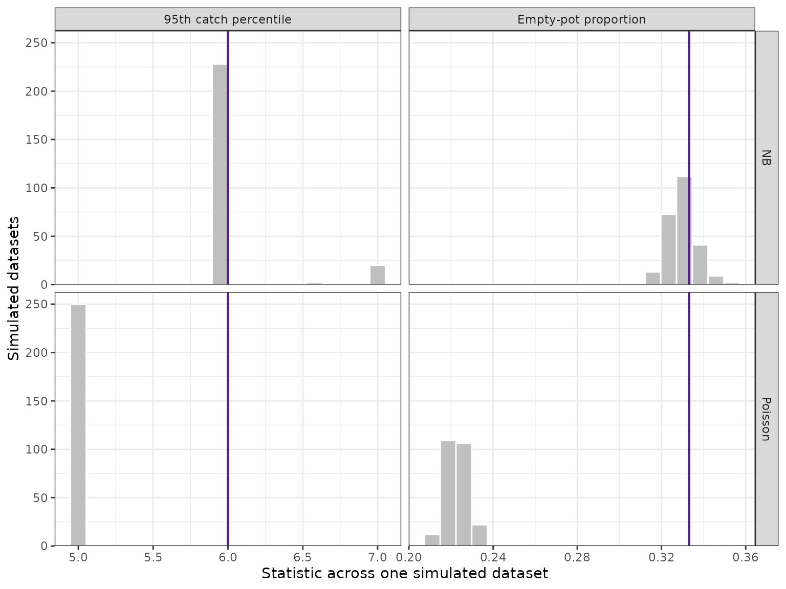
Observed empty-pot proportions and upper catch quantiles (purple lines) against their distributions across 250 simulated datasets. The histograms expose consequences of the candidate observation distributions that a standardised index alone does not show.
More zeros than simulated do not prove that a zero-inflated model is needed: the mean structure or dispersion can also be wrong. For hurdle or delta models, check encounter probability, the positive-response distribution, and the combined response. The combined check alone can conceal compensating errors in the components.
Which residuals answer which question?
| Residual or approach | Useful for | What to watch |
|---|---|---|
Response, y - fitted
|
Errors in catch or CPUE units; patterns against predictors | Variance often changes with the mean; tails and zeros depend on the family. |
| Pearson | Mean/variance patterns after scaling by the model’s observation SD | Not generally normal for non-Gaussian data; native weighting and Bayesian definitions differ. |
| Deviance | Signed contributions based on likelihood discrepancy | Family-specific, not automatically normal, and not supplied by every backend. |
| PIT / randomised quantile | Distribution-aware checks using a predictive CDF | Discrete observations require randomisation; conditioning and estimated parameters affect calibration. |
| DHARMa | Simulation-based quantile checks, predictive summaries, and residual-pattern tools | It implements a PIT-like approach, rather than a distinct residual principle; simulations must match the response and hierarchy being checked. |
| One-step-ahead (OSA) | Sequential predictive checks in dependent latent-variable models | Requires suitable implementation, an observation order, and accurate conditional prediction; often more expensive. |
At a probability mass, a randomised PIT value is drawn between the
CDF just below the observation, F(y-), and
F(y). For integer counts this becomes F(y - 1)
to F(y); hurdle and Tweedie responses require randomisation
at their zero atom. Applying qnorm() puts the result on the
standard-normal scale (Dunn and Smyth 1996). At continuous
responses, use F(y) directly. Exact reference distributions
assume the correct predictive distribution with known parameters;
fitted-model checks generally have approximate calibration. Keep a
reproducible seed and check sensitivity to randomisation, rather than
choosing the most attractive plot.
Random effects, space, and time
Conditioning is a separate choice from residual scale. Conditional simulations hold fitted random effects fixed and focus on observation-level behaviour; unconditional simulations regenerate random effects and inspect more of the hierarchy. Neither by itself validates the whole model. For latent spatial fields, plugging in fitted modes can distort goodness-of-fit diagnostics.
DHARMa changed its default to conditional simulations in version 0.5.0. Record the package version and the conditioning used, and consult the native simulation method rather than assuming that identical arguments mean the same thing in every backend. The DHARMa development NEWS also records a fix after 0.5.0 for mutation of glmmTMB simulation settings; check that fix before using that combination for repeated production diagnostics. See the DHARMa documentation and NEWS.
Map residuals and inspect them through time as well as against predictors. Spatial or temporal dependence can invalidate routine independent-residual test p-values. Repeated locations and timestamps need appropriate grouping, and that grouping changes the question being tested. A well-calibrated in-sample plot does not establish out-of-sample predictive skill.
sdmTMB
sdmTMB recommends type = "mle-mvn" PIT residuals: fixed
effects stay at their maximum-likelihood estimates, while one
approximate conditional random-effect draw is used. These are
not OSA residuals. Its "mle-eb" plug-in
mode is discouraged for goodness-of-fit checks; the
"mle-mcmc" alternative requires a suitable converged MCMC
draw. See the native
residual reference and worked
residual examples.
For a single-response model such as pcod_model in Spatial and spatiotemporal
diagnostics, influ2’s unified Q-Q workflow is:
pcod_checks <- influ_residuals(
pcod_model, nsim = 250, seed = 41, conditioning = "conditional_draw"
)
plot(pcod_checks, type = "qq")This fixes one native approximate conditional latent draw across all
response simulations and batches, as recorded in
pcod_checks$metadata$scheme. It uses finite-simulation
randomised ranks rather than sdmTMB’s analytic quantile CDF, so the two
results are not numerically identical. Omit conditioning or
choose "fitted" to retain the previous fitted-field route;
use "new_effects" for native process simulations with
fitted smooths fixed. The identity reference preserves location and
scale departures instead of fitting a quartile line through the points.
These remain exploratory fitted-model diagnostics.
sdmTMB also has a dedicated DHARMa bridge. The following recipe reuses an already fitted model; it is not evaluated again in this article.
set.seed(41)
pcod_simulations <- simulate(pcod_model, nsim = 250, type = "mle-mvn")
pcod_dharma <- sdmTMB::dharma_residuals(
pcod_simulations, pcod_model, plot = FALSE, return_DHARMa = TRUE
)
DHARMa::plotQQunif(
pcod_dharma, testUniformity = FALSE,
testOutliers = FALSE, testDispersion = FALSE
)The sdmTMB bridge can check the combined delta/hurdle response. Its analytical residuals instead select a component. influ2’s helpers now reuse the generalised engine and preserve its selected component and simulation target.
tinyVAST
For supported single-response tinyVAST fits, the plotting helpers use simulated normal-score ranks. Fitted-field conditioning remains the default, with one shared conditional latent draw now available explicitly:
tiny_checks <- influ_residuals(
tiny_model, nsim = 250, seed = 41, conditioning = "conditional_draw"
)
plot_predicted_residuals(tiny_checks)
plot(tiny_checks, type = "qq")The tinyVAST
simulation interface can support an external
DHARMa::createDHARMa() workflow, but it needs careful
response selection and observation alignment for multivariate models.
Its "mle-mvn" simulation draws a new approximate
random-effect vector for each replicate, unlike sdmTMB’s single-draw
residual recipe. influ2’s new "conditional_draw" option
deliberately prepares one native TMB draw and reuses it, rather than
calling tinyVAST "mle-mvn" separately for each batch. This
does not provide an automatic multivariate DHARMa adapter or establish
universal fitted-model calibration.
GLM, GAM, glmmTMB, and brms
All influ2 helpers use the generalised simulation engine for GLMs,
GAMs, and glmmTMB. Native packages additionally offer their own residual
methods. Current glmmTMB also provides a "dunn-smyth"
option, but family and version limitations matter, including fixes for
multi-trial binomial responses. Do not assume it handles every
zero-inflated mixture correctly. The glmmTMB
residual source and release notes
describe the available implementation. Being built on TMB does not
itself provide an OSA interface.
For brms, use the original complete
brmsfit. The compact example fixtures in influ2
retain joint draws for influence calculations but omit the Stan state
needed by native prediction and residual methods. They cannot support
these residual helpers, get_bayes_R2(), or the Bayesian
calculations in table_criterion(). These require complete
brms fits. table_criterion() also supports model-specific
frequentist likelihood criteria, without treating those criteria as
interchangeable with Bayesian scores; see Model comparison.
brms’s native residual summaries depend on its prediction method;
Pearson residuals are based on predictive dispersion, not simply the GLM
formula. Posterior predictive checks (brms::pp_check()) can
retain features obscured by a residual mean. Reusing a full fitted model
does not rerun MCMC, but prediction across posterior draws can still
require substantial memory. See the brms
residual reference.
OSA is a specialised additional workflow
OSA residuals use the predictive distribution of each observation
conditional on the preceding observations, which can account for latent
dependence (Thygesen
et al. 2017). The order and conditioning set must therefore
be explicit. TMB offers oneStepPredict(),
but its methods require suitable template support and approximation
checks. They are not universally available through
residuals() in glmmTMB, sdmTMB, or tinyVAST. influ2 does
not yet implement an OSA adapter. Likewise, a refitting simulation study
is a separate, potentially costly validation exercise, not a default
action performed by a residual plot.
Optional PIT ECDFs and choosing the four panels
The normal-score PIT transformation is already implemented; it is not
an outstanding feature. A PIT ECDF offers a different display of those
same stored ranks. It compares their cumulative
distribution with the uniform reference. The difference version
subtracts the reference, ECDF(u) - u, making departures
visible around a horizontal zero line. Neither is the observed-response
ECDF from the default fourth panel, a new residual method, or a LOO-PIT
calculation.
These optional panels use bayesplot::ppc_pit_ecdf()
with supplied PIT values. Install bayesplot >=
1.16.0 to use them. The default overview does not require
bayesplot. Nothing below refits a model, reruns MCMC, simulates more
responses, or retains a response-simulation matrix.
Reference-grid correction: the validation study found a horizontal grid-alignment problem in bayesplot 1.16.0’s independent PIT ECDF limits. influ2 now places those limits and the empirical CDF on their common calculation grid, including both endpoints. In the same 10,000-sample independent-uniform control, the corrected display crosses the 95% limits 4.77% of the time, compared with 12.46% before the correction. The interval calculation, stored PIT values, and default four panels are unchanged. This fixes the display, not fitted-model calibration. The original study and its pre-correction results remain frozen and available for comparison.
patchwork::wrap_plots(
plot(nb_checks, type = "pit_ecdf"),
plot(nb_checks, type = "pit_ecdf_diff"),
ncol = 2
)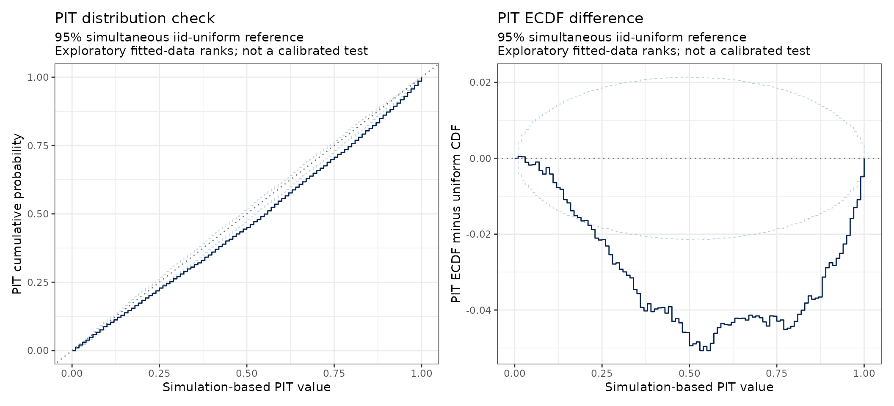
Two displays of the existing simulation-based PIT values for the negative-binomial glmmTMB model: their ECDF (left) and ECDF minus the uniform reference (right). Dark solid curves show the empirical distribution or its difference; pale dashed curves are bayesplot’s numerically adjusted 95% simultaneous reference limits assuming independent uniform PIT values. Grey dotted lines mark identity and zero, respectively. These are exploratory reference limits, not calibrated goodness-of-fit thresholds for this fitted mixed model. No additional response simulations are used.
The PIT curves contain much the same distributional information as the normal Q-Q panel. Their reference limits are simultaneous on the evaluation grid under the independent-uniform reference, whereas the existing Q-Q ribbon is pointwise. This does not make the PIT plots automatically calibrated for estimated parameters, posterior predictive reuse of observations, or latent dependence. We explicitly choose bayesplot’s independent-reference method and do not apply its alternative dependence-aware tests or report p-values for these fitted-data ranks. bayesplot may print a message about its newer correlated method; that is not evidence that those tests validate this residual calculation.
pit_grid_size = K controls the number of equal
subdivisions of [0, 1] (default 100, maximum 1000), giving
K + 1 evaluation points including zero and one. It does not
control the number of response simulations. More points can resolve
finer departures but take longer to calculate the reference limits.
response_scale affects only the response ECDF; PIT ECDFs
retain their uniform horizontal scale. The curves connect grid
evaluations; the reference is not a simultaneous guarantee at every
point between them. Endpoint PIT values and ties are kept. The plotting
bridge recognises already aligned dependency output and refuses unknown
layouts rather than silently shifting future versions’ limits.
To change any of the four panels, supply their names in row-wise
order. The unchanged default is
c("qq", "fitted", "year", "auto"); "auto"
chooses response calibration or a response ECDF using the original
response metadata. For example, retain the response ECDF and replace the
year panel with a PIT ECDF difference:
plot(nb_checks, panels = c("qq", "fitted", "pit_ecdf_diff", "distribution"),
response_scale = "log1p")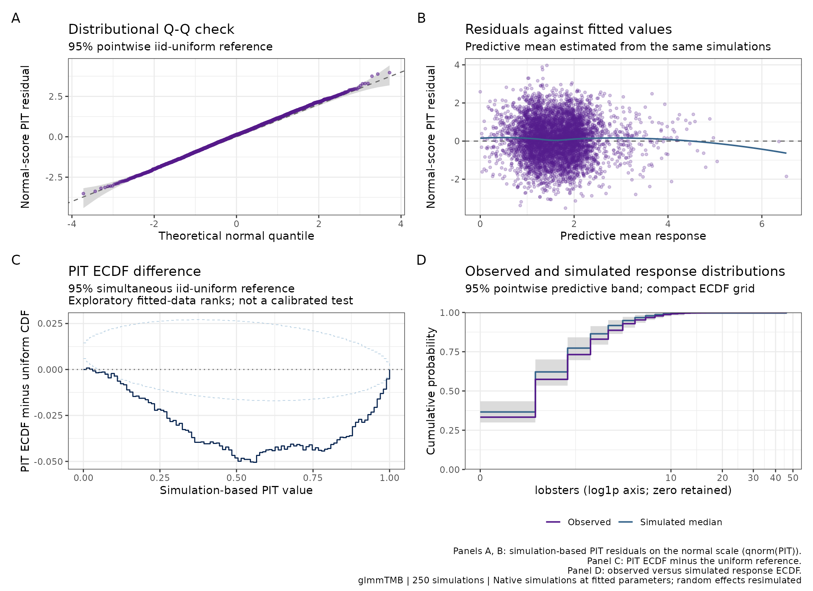
A customised four-panel diagnostic retaining the Q-Q, fitted-value, and response-distribution checks, with a PIT ECDF difference in the lower-left position. Panels A and B use normal-score PIT residuals, panel C uses the original PIT values on a uniform horizontal scale, and panel D compares response distributions. The footer follows the selected panel order. This is an optional layout; the default still includes the year panel.
All standalone types are available in panels, including
"calibration" and "calibration_groups" when
the needed summaries were calculated. There must be exactly four names;
their order and repetition are allowed. Missing summaries produce an
informative error rather than silently substituting a different
diagnostic. For an optional PIT plot in the fourth position, use:
That last layout omits the complementary response check, so inspect
it separately with plot(nb_checks, type = "distribution")
when needed. Selecting panels does not change the fitted model, saved
residuals, or simulation scheme.
Using simulations generated elsewhere
You may already have simulations from a bespoke model, a
collaborator’s workflow, or a native package call.
as_influ_residuals() calculates the same compact residual
diagnostic from those supplied responses. It does not fit a model, run
MCMC, or generate more responses. Both entry points use the same rank,
predictive-mean, ECDF, and calibration calculation engine.
The matrix must have one observation per row and one complete
joint simulation per column. Supply matching observation data,
a response column, an explicit year column, a response kind, and a
description of the simulation conditioning. Matrix row names must
exactly match the data’s row names, or a declared
observation_id column, in the same order. Missing,
duplicated, or reordered IDs fail explicitly. Nothing is silently
transposed or realigned. The labels must come from verified native
output order; assigning plausible row names cannot establish that the
underlying observations really match.
For a worked example, reuse the fitted lobster glmmTMB model from the start of this article. The first call below generates 100 whole-response replicates using glmmTMB itself. It simulates observation variation and redraws the monthly random effects at fitted parameters. The constructor then only summarises that existing matrix:
set.seed(20260912)
response_simulations <- as.matrix(simulate(lobster_nb_mixed, nsim = 100))
fitted_rows <- rownames(model.frame(lobster_nb_mixed))
data_rows <- match(fitted_rows, rownames(lobsters_per_pot))
stopifnot(!anyNA(data_rows), nrow(response_simulations) == length(fitted_rows))
simulation_data <- lobsters_per_pot[data_rows, , drop = FALSE]
# Native simulate() follows the fitted observation order for this count model.
rownames(response_simulations) <- fitted_rows
external_checks <- as_influ_residuals(
response_simulations, simulation_data,
response = "lobsters", year = "year", response_kind = "distribution",
conditioning = "Fitted parameters; monthly random effects resimulated",
groups = "month", batch_size = 25, seed = 41
)
external_checks
#> Simulation-based residual diagnostics (external)
#> 5049 observations; 100 simulations
#> Time: year [ explicit external column ]
#> Fitted parameters; monthly random effects resimulated
#> Exploratory ranks; not a calibrated goodness-of-fit test
plot(external_checks, response_scale = "log1p")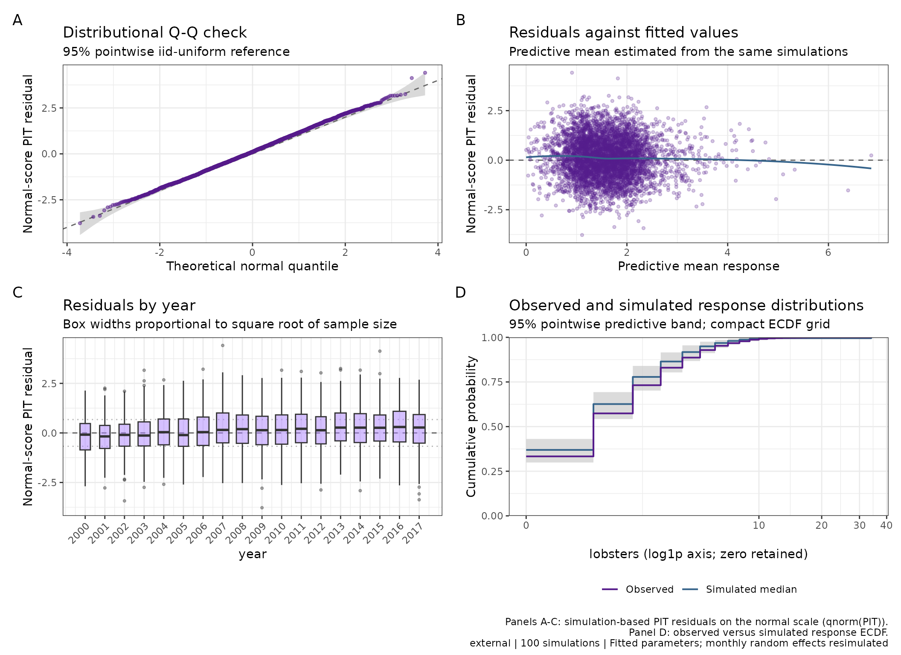
The standard four-panel diagnostic calculated from 100 externally generated whole-response simulations of the fitted lobster glmmTMB model. Each native simulation includes newly simulated monthly random effects and observation variation at fitted parameters. The constructor generates no further responses, and its predictive means come from this same supplied matrix. These are different replicates from the earlier overview, so their ranks and Monte Carlo summaries need not match it exactly. The normal-score PIT panels and response ECDF retain their usual exploratory interpretation; the ribbons are not calibrated mixed-model tests.
The returned object also works with the standalone Q-Q/PIT views and the existing residual helpers. The grouping columns must be retained during calculation, as above:
plot(external_checks, type = "qq")
plot(external_checks, type = "pit_ecdf_diff")
plot_predicted_residuals(external_checks)
plot_grouped_residuals(external_checks, groups = "month")The constructor processes the supplied matrix in batches and does not
retain it, the fitted model, or a function capturing either. The matrix
you created still occupies memory until you release it. This initial
interface is not an on-disk reader or streaming simulator. For large
supported fits, the native influ_residuals() route can
avoid creating the full response matrix in the first place. Plotting an
existing diagnostic repeats neither calculation.
For a fixed matrix, the seed controls tie randomisation, not response simulation. Ranks and predictive means are unchanged by the calculation batch size; the compact response ECDF grid can change because it includes the first batch’s range. A fitted-model call may consume random numbers while selecting posterior draws before randomising ranks, so the same seed alone does not guarantee the same ranks across the two entry points.
Response components and encounter probabilities
The declared response kind determines which response check is
available; it is not guessed from a sample of zeros and ones. Use
"combined" for a joint delta/hurdle/zero-inflated response.
To diagnose a positive component, supply its own observations and
complete component simulations, and declare
component = "positive". The constructor never filters
simulated zeros or converts a combined matrix into a positive-component
diagnostic. The caller must verify that the declared component and
simulation target are correct.
Bernoulli and known-trial binomial inputs require an additional column of original fitted success probabilities, not the average of simulated zero/ one responses. Record their conditioning separately from the response simulations. For example, given already aligned encounter data and simulations:
encounter_checks <- as_influ_residuals(
simulated_presence, matched_data,
response = "present", year = "year", response_kind = "bernoulli",
component = "encounter", probability = "fitted_probability",
conditioning = "Observation error at fitted parameters and smooths",
probability_conditioning = "Fitted parameters and smooths",
calibration_groups = c("year", "target")
)
plot(encounter_checks)For response_kind = "grouped_binomial", supply integer
success counts and a trial_counts column containing the
known numbers of trials. Its default response panel remains the ECDF,
with calibration available explicitly. No case weights or area weights
are interpreted as trials. The help page for
as_influ_residuals() sets out the full input and alignment
contract.
Connect model checks back to the index
An observation model that fails to reproduce dispersion or zeros may
still produce a plausible year curve. Conversely, changing a
well-supported mean relationship can materially alter the index. After
inspecting residuals, use plot_compare() and refitted step
plots to explain those consequences; the main
article demonstrates both.
Keep the same observations, years, response component, and index
scale when comparing models. The main article’s step plots compare
centred year-effect contrasts. plot_compare() also accepts
calculated expected-response indices from cpue_index() and
area-integrated results from integrate_index(); these are
different quantities and must be labelled accordingly. Prediction-grid
coverage, area expansion, and extrapolation need their own checks; see
CPUE indices.
The practical sequence is to identify a residual pattern, consider plausible data or model explanations, fit defensible alternatives, and then inspect both model adequacy and index sensitivity. Residual tests alone should not decide which CPUE series enters an assessment.